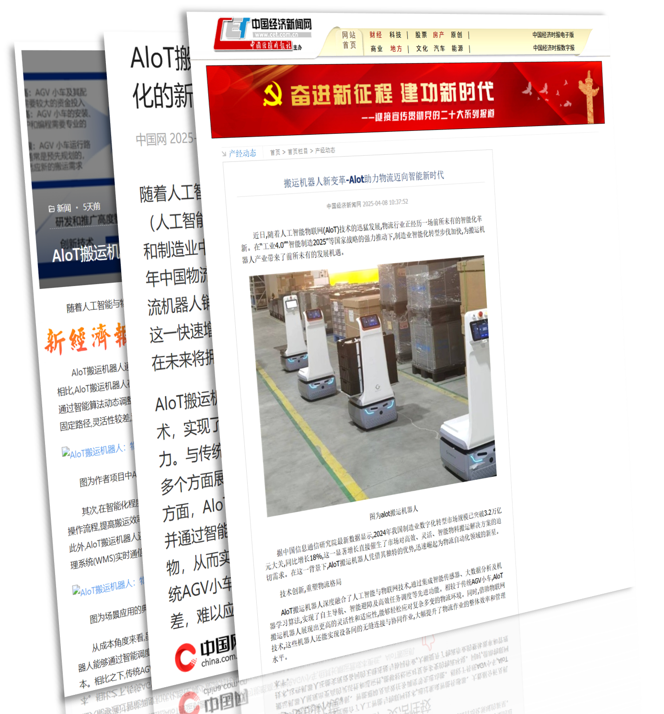
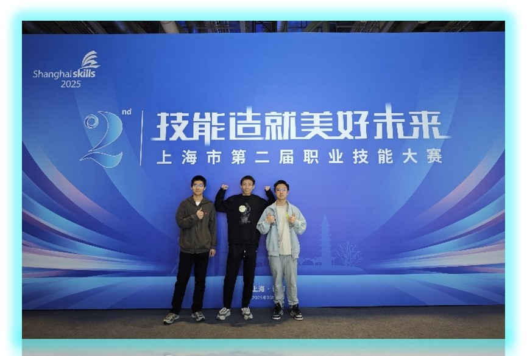

研发历程 & 技术积淀
“破局者”不仅是一个机器人小车，它是软件开发、机械工程与物流逻辑的深度融合。

Phase 01 / 系统开发
底层协议与实时通讯
我们正在进行机器人编程，核心在于打通后台数据中心与小车硬件的实时链路。通过将计算机科学中的数据结构与算法应用于工程实践，我们实现了传感器数据的毫秒级处理，这不仅涉及代码编写，更是对图像处理与信号处理技术的综合运用。
数据联通
算法实践

Phase 02 / 机械工程
后台建模与维护体系
在机械组装与维护阶段，我们不仅关注轴承与齿轮的物理连接，更通过后台建模实现对机器人健康状态的预测。学生通过实际动手，掌握了精密的工程调整技巧。严谨的工程态度是“破局者”能稳定运行的基础。
数字孪生
精密机械

Phase 03 / 行业影响力
媒体关注与物流革新
AIoT 搬运机器人的研发获得了三家主流媒体的深度报道。该项目致力于解决大型电商仓库中“最后一公里”的分拣难题，通过预设路径与任务实现货物的零人工干预搬运，显著提升了现代供应链的订单处理速度与准确率。
媒体投稿
效率突破

Phase 04 / 持续进化
行业交流与技术对齐
闭门造车无法破局。我们积极参加各大行业展览会，通过与一线专家的交流，将最新的激光雷达技术与边缘计算架构引入到“破局者”的迭代计划中，确保我们的技术栈始终处于行业前沿。